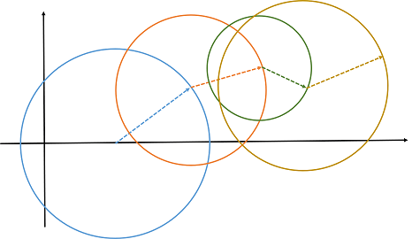
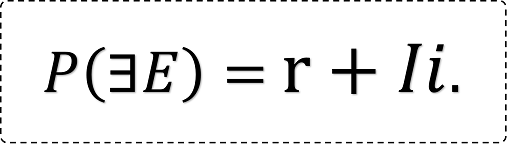
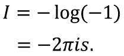
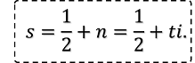
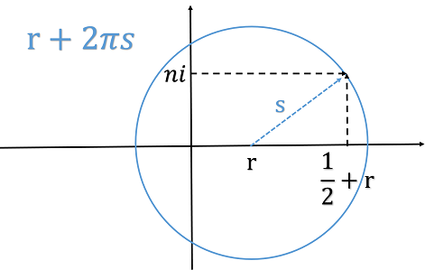
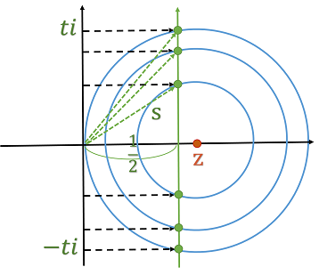

リープグラフと複素確率
リープグラフは，座標におけるグラフである．辺が半径の長さ，節は辺の始点の座標である．今年はうるう年であるが，リープとはリープイヤーのリープであり，うさぎがぴょんぴょん跳ねたときの跳ねあとに似ていることから名付けた．どこか台風の進路予想図やあめんぼの通った水面にも似ている．節V1(3,2)と節V2(6,5)があるとき，辺E1は√13，E2は3√2である．辺を半径とする円の周は辺に2πを掛けた値となり，辺を半径とする円の積は辺を二乗してπを掛けた値である．
リープグラフの売りは，複素平面で記述するとき発揮される．複素平面では確率を0から1に限らなくてよいことはご存知だろうか．一般に事象Eが存在する複素確率P(∃E)をr+Iiとする．rが0から1のときはコルモゴロフの意味での確率である．Iはシャノンの情報量である．
ここで注意しておくが，シャノンの情報量も複素数にしてよい．Iは-logP(∃E)と表せるが，P(∃E)が複素数のとき，Iも複素数になる．-log(-x)=-log(-1)-log(x)であるから，実数-log(x)を実部に，純虚数-log(-1)を虚部にとる．なお，log(-1)は2πisと表せる．sは実部が1/2の複素数である．
さて，一般に，情報を得ても確率は変わらない．情報は確率に影響を与えないのである．情報が影響を与えるのは，反対の事実を認識する場合である．事実Aが起きたのにもかかわらず，情報Xが確率1/2でAかBかを示すとき，事実Aを導かずにBと認識してしまう場合である．逆手に取れば，ある情報が一方的に受け取られており，事実はその逆であることを分かっていると，特に相場では大きな利益を得られることが多い．
モンティ・ホール問題や3囚人問題において，情報を得る前後で確率は変わらないが，確率にまつわる何かが変わっている．それが確率の絶対値である．情報によって確率の絶対値は大きくなる．P=r+Iiと定義したのはそれを表現するためである．確率の絶対値は円周である．確率の絶対値を2πで割ると，円の半径hが求まる．つまり，|P|=2πhなのである．辺がh=|P|/2πのリープグラフになる．
円の中心zが(0,0)で半径がsの場合，|P|=2πsである．この中心zを(r,0)に延ばしてみたい．すると，P=r+2πsとなり，s=1/2 +tiだから，|P|=|r+π+2πti|である．特にt=±√(r-1)/2のとき，|P|=r+πである．
辺がsで節が(r,0)のリープグラフは，グラフ理論を用いて計算できていく．すると，実数Rにおいてs=R+tiとするときに，ti=(P-r-2πR)/2πはR=1/2の場合にのみどうしてζ(s)=0となるのかについての手掛かりになる．情報をたくさん得るほどに確率の絶対値はいくらでも大きくなれる．けれども，いくら情報を集めても，これから起こすすべての事象を知り尽くしておられる神に匹敵できるはずがない．法則を知り事実を予想し続けることのほかに，未来を見通す方法はあるのだろうか．